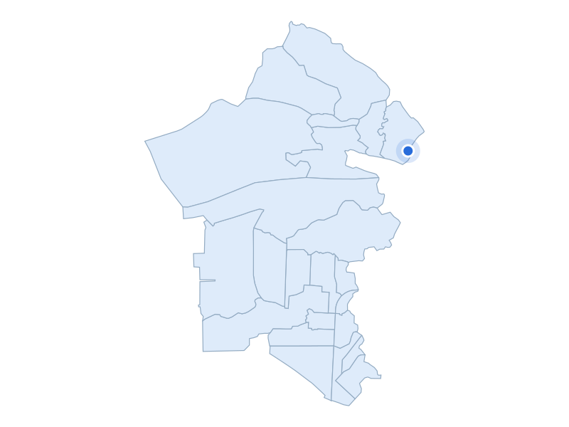

부동산 데이터 | 신혼부부가 사는 곳
거주 수 1위 · 인천 옛 서구

청라호수공원
지역 자료사진 · 촬영 연도 미상 · 공공누리 제1유형
거주 수 상위 5개 구 · 현재 지역
01 서구
15,737쌍
02 송파구
11,752쌍
03 덕양구
11,452쌍
04 강서구
10,724쌍
05 부평구
10,204쌍
주거 특징·랜드마크
2024년 통계의 인천 서구에는 청라와 검단이 함께 들어갑니다.
주거 특징·랜드마크
청라는 업무·주거·문화·레저 기능을 함께 배치하도록 계획된 지역이며, 청라호수공원은 산책과 여가를 위한 공간입니다.
주거 특징·랜드마크
현재는 아라뱃길 남쪽 서해구와 북쪽 검단구로 나뉩니다.
거주 수 1위 · 15,737쌍

2024 옛 서구 범위 · 대응하는 현행 구역 합산
파란 점: 단지 위치
지역 아파트 실거래 중위값
5억 5,000만원
지역 거래 1,530건
단지 사례
우미린파크뷰1단지
5억 6,200만원
단지 거래 5건
2026-05-01 ~ 2026-10-31 계약
전용 83~85㎡ · 아파트 매매 · 취소 제외
편집 대표시안 · provisional · 실측 타이밍 대기